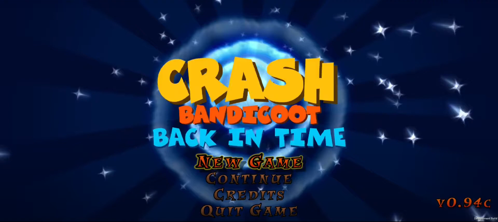

Crash Bandicoot: Back in Time

Free fan-made platformer game starring the iconic bandicoot. Players progress through levels, jump over obstacles and break crates to earn rewards.
What Crash Bandicoot: Back in Time offers
- 25 levels - 10 classic 3D levels, 10 flashback-styled levels and 5 Uka-Uka trials
- Crash Creator, with which you can make custom 2D levels
- New music
- Two playable characters: Crash and Coco
My tasks
- Preparing the asset extraction list
- Gameplay testing
- Providing solutions to various in-game problems
- Several custom levels created in Crash Creator
Links
Website: https://gembit.itch.io/crash-back-in-time
Discord: https://discord.gg/n3ev7g3RnE
Website with player-made levels: https://crashcreator.com/